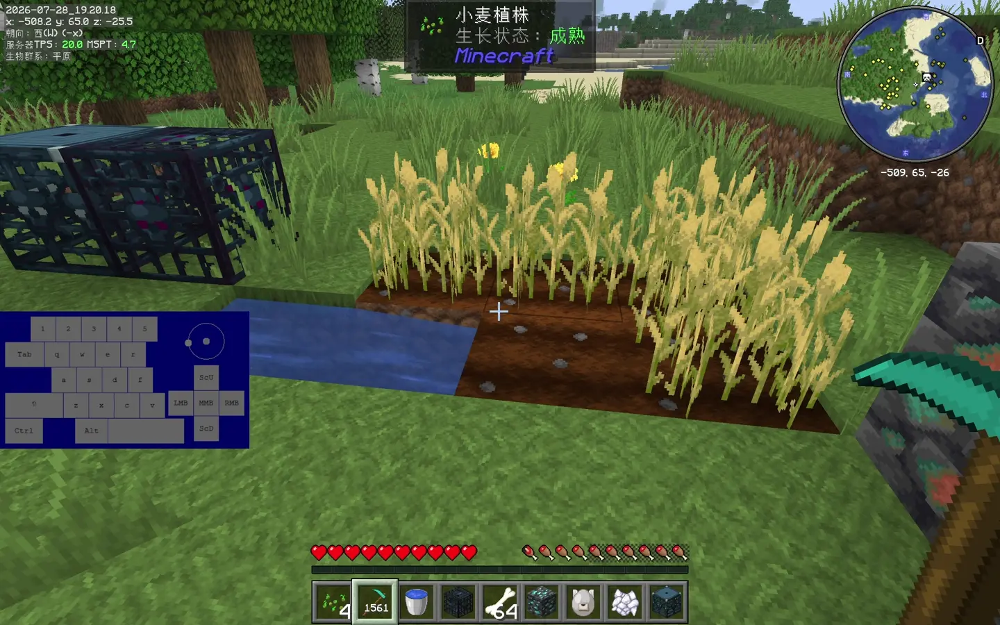
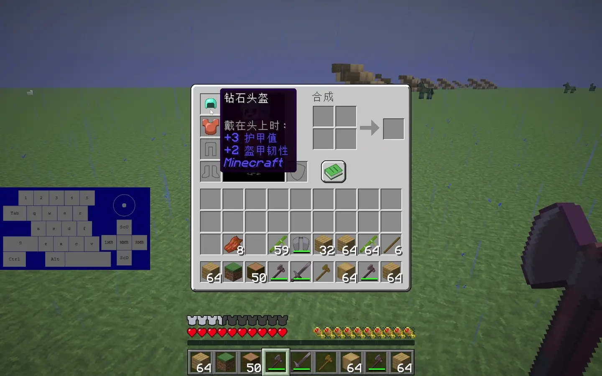

AppleSkin
食物带来的饥饿和饱和度，先在状态栏亮出来。
截图分镜 → 后段实录实机素材已整理 · FABRIC 26.2
AppleSkin、Show Durability、Neat 与 Jade 不替你玩游戏；它们把“该不该吃、还能用几次、谁快没血、准星对着什么”直接放到你看得见的位置。



页面所有重点都能在对应实录中回看。
先分清：每个 MOD 只负责一层信息
从自己、物品、周围实体到准星目标，信息出现的位置不同，适合解决的问题也不同。
食物带来的饥饿和饱和度，先在状态栏亮出来。
截图分镜 → 后段实录剩余耐久直接写在物品图标上，不用逐格悬停。
安装前后截图对照清楚周围野怪的血量，战斗时不用逐个瞄准确认。
截图分镜 → 后段实录准星对着方块或实体，信息卡只讲当前目标。
截图分镜 → 后段实录Show Durability · 安装前后实录
